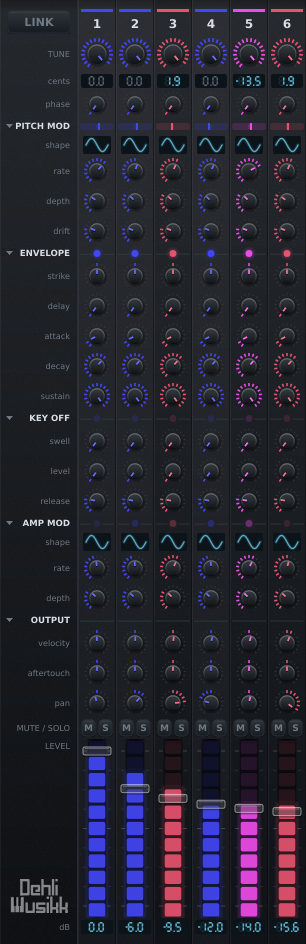
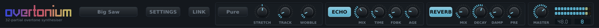

Overtonium / Controls
Controls
Thirty-two channel strips, a noise channel, and a bar of global controls across the top. Every strip carries the same twenty-three controls, which is seven hundred and thirty-six of them before the bar is counted, so a good deal of the design is about not having to move them one at a time.
A channel strip

| Control | Range | What it does |
|---|---|---|
| TUNE | equal to just | Where this partial sits between the tempered position and the exact ratio. The readout shows the resulting cent offset |
| PHASE | 0 to 1 turn | Where in its cycle the partial starts, when phase reset is on. With it off there is no reset for it to aim and the knob does nothing |
| PITCH MOD shape, rate, depth | Eight shapes, 0.01 to 30 Hz, 0 to 1200 cents | Per-partial vibrato |
| DRIFT | 0 to 25 cents | Smooth random pitch wander, its own stream per partial |
| ENVELOPE strike, delay, A, D, S | -100 to +100%, 0 to 5 s, 0.2 ms to 5 s, 1 ms to 20 s, 0 to 100% | Exponential decay. STRIKE starts the partial sooner and faster the harder the key is struck |
| KEY OFF swell, level, release | 0 to 5 s, 0 to 100%, 1 ms to 20 s | A second envelope for letting go |
| AMP MOD shape, rate, depth | Seven shapes, 0.01 to 30 Hz, 0 to 100% | Per-partial tremolo |
| VELOCITY | -100 to +100% | How much key velocity scales this partial. Negative inverts it |
| AFTERTOUCH | -100 to +100% | How much key pressure moves this partial. Negative fades it out |
| PAN | hard left to hard right | Equal power, so the level holds as the partial crosses the field |
| M and S | Mute wins over solo. Right-click either one to clear every mute or every solo at once | |
| LEVEL | -inf to 0 dB | Fader spaced by decibels, with the meter filling its track |
What the modulators trace
Both per-partial modulators have a shape as well as a rate and a depth, picked from a small drawing of the wave between the two knobs. Click it for the list by name. Pitch offers eight, amplitude seven, and each channel has its own, the noise channel included, which is the point: the fifth partial can be gated while the fourth breathes.
| Shape | What it does |
|---|---|
| Sine | The default, and what both modulators were before there was a choice |
| Triangle | The same travel at an even speed, which reads as more mechanical than a sine |
| Sawtooth, Reverse Sawtooth | A ramp and a snap back, either way round |
| Square | Two values and nothing in between. On pitch it is a trill, and comes in a bipolar form that goes the same distance either side of the note and a unipolar one that only ever goes up |
| Sample & Hold | A new random value each cycle, held until the next. On pitch, with the depth wide open, that is a run of random notes anywhere within an octave either side |
| Random | The same values, glided between rather than stepped. The contour DRIFT traces, under your own rate |
Amplitude has one square, not two. A tremolo only ever comes down from the fader, so there is no second direction for a unipolar shape to go in and the one square gates the whole depth. For the same reason every shape on that side is read a quarter turn ahead: a note begins at full level and dips, rather than starting half attenuated.
The square and stepped shapes do not click. The gain a partial is given already slides across each control block rather than jumping, so an edge arrives as a slew of about two thirds of a millisecond, which is short enough to read as an edge and long enough not to be heard as a tick.
LINK does not reach these. It drags a value across the series along a weighted curve and there is no weighting a list of named shapes, so the shape menu offers to set every channel at once instead.
Velocity and pressure, per partial
Velocity being per partial is what lets a soft note be a different timbre rather than just a quieter one. Set the fundamental to 0% and the upper partials to 100% and the tone opens up as you play harder, which is roughly what a struck string or bar does.
Both controls run either side of zero. A positive amount means harder or heavier is louder. A negative amount inverts that, so the partial is at its loudest when you play softly. The two halves are exact mirrors, so -50% at a given velocity matches +50% at the opposite velocity. The reason to want the negative half is crossfading: give one set of partials a positive amount and another set a negative one, and the two timbres trade places across the velocity range instead of one simply fading in.
Aftertouch works the same way but adds to the fader instead of scaling it, and it ignores velocity entirely. A strip with its fader all the way down is silent until you lean on the key, and then it fades in under your finger, while a negative amount fades an open strip back out. Both channel pressure and polyphonic aftertouch are accepted and whichever is higher wins. Pressure is smoothed over about 15 ms, so seven-bit MIDI does not step the gain.
The mod wheel stands in for it by default, since most keyboards have no aftertouch at all and the wheel is the control your hand already goes to. A wheel left alone reads zero, so nothing changes for a controller that does send pressure. Settings has an "Aftertouch from" entry if you would rather have one or the other on its own.
The two-part envelope
Delay, attack, decay and sustain on the way in. Letting go of a key then runs its own little envelope rather than simply fading out: the KEY OFF rows say where the level goes when the key is released and how long it takes to get there, and only then does the release run from that level down to silence.
Above the sustain that is a release click or a bloom, the sound a damper landing or a hammer returning makes, and it can be louder than the note was while you were holding it. Drawbar Organ uses it that way: the upper drawbars jump to 55% for two milliseconds as the contacts break. Below the sustain it is the fast initial drop into a long tail that a piano or a struck bell actually has, which is probably the half that gets more use. A key-off level of zero skips the stage entirely and releases from wherever the level sat.
The delay stage holds a partial silent before its attack begins. Staggering it across the series makes the spectrum unfold rather than arrive all at once, which is how Slow Pad and Shimmer open up. It is latched in samples at note-on, so moving the knob cannot retime a note already waiting.
STRIKE sits at the head of the section because it is about the blow rather than about the shape, and it aims that blow at the two rows under it, the way the velocity row aims it at the fader. Zero ignores the gesture. Positive means a hard note starts sooner and arrives faster, and a soft one waits and then opens slowly. Negative inverts it.
The two halves lean opposite ways on purpose, and each knob stays the limit of its own row. Velocity only ever lengthens the attack, so ATTACK goes on meaning the fastest the partial gets, and it only ever pulls the delay in, so DELAY goes on meaning the latest it arrives. Both span eight octaves at full amount, a range of 256 to 1: a partial set to 2 ms attacks in 2 ms under a hard blow and takes half a second under the softest, and a 400 ms delay stays 400 ms under the softest and comes in to under two milliseconds under the hardest. The stretched attack stops at five seconds, which is as long as the ATTACK row itself goes.
Setting it per partial is what separates it from a velocity curve over the whole instrument: give the upper partials a strike amount and leave the fundamental at zero, and a hard chord lands as one bright block while a soft one unfolds, the fundamental first and the series arriving behind it.
One shape worth knowing, because it is what a music box or a thumb piano has: no sustain at all, so the partial decays to silence while the key is still down, and then a key-off level that brings it back. Reaching zero is not the same as being finished.
Ganging the channels
LINK in the top bar gangs the strips: dragging any knob moves the same knob on the others. It works relatively, applying an offset to wherever each strip already sits rather than dragging everything to one shared value, so a spectrum you have shaped by hand keeps its shape. The offset is always measured from the values captured when the drag started, so returning the knob to where you began restores the strips exactly, even if some of them hit an end stop along the way.
The button opens a menu rather than toggling, and the same menu is on a right-click anywhere in the mixer, which is where you are when you want it. With LINK engaged, pointing at a knob arms every knob a drag from it would move, before you touch anything, and how brightly each one lights follows the curve.
| Scope | Reaches |
|---|---|
| All | every partial |
| Same interval | only the strips sharing the interval class of the one you grab, so you can move just the fifths, or just the octaves |
| Odd harmonics | 1, 3, 5 and so on, the hollow half of the series |
| Even harmonics | 2, 4, 6 and so on |
| Curve | How the drag is shared out |
|---|---|
| Uniform | every selected strip moves by the same amount |
| Taper from the grab | a strip moves less the further along the series it sits from the one you grabbed |
| Spread / gather | pushing up scatters the strips apart along random directions, pulling down gathers them onto the strip you are dragging |
Taper is anchored on the strip you grabbed, which always gets exactly its full share of the drag. That has to be true, since the knob under the mouse follows the mouse. From there a strip's share falls off in a straight line with distance, reaching nothing thirty-one channels away.
Where you reach in is therefore the whole control. Grab channel 1 and the mixer tilts down across its full width, from everything to nothing. Grab channel 32 and it tilts up instead. Grab channel 10 and the curve peaks under your hand and falls away on both sides, to 0.71 at channel 1 and 0.29 at channel 32. Distance is measured against the full width rather than against whichever end is nearer, so the reach stays the same wherever you grab: scaling it to the nearer end would make a grab on channel 2 drop channel 1 to nothing in a single step.
LINK gangs the 32 partials only. The noise channel has no tuning, pitch modulation or drift to gang.
Working the panel
Double-clicking a knob restores its default, which is that control's own default rather than the bottom of its range. On a fader that is 0 dB rather than silence.
Undo and redo matter here more than they would on a smaller instrument, because one LINK drag moves the same knob on all 32 channels and without a history the only way back is to reload the preset. A step is a gesture rather than a value change, so that drag comes back in one rather than thirty-two. Cmd-Z and Cmd-Shift-Z, or Ctrl with the same two keys away from a Mac, work where the host lets them through, which many do not, since a DAW usually keeps those for its own history. Both are also at the top of the Settings menu, which always works. Loading a session starts you with an empty history rather than with whatever the last person did.
Resting on a strip names the partial it belongs to: the harmonic number, the interval that harmonic makes with the fundamental, how many semitones above the played note the tempered position is, and how far the exact ratio sits from that in cents. It is the row that channel has in the table of the series, without leaving the mixer. The mute and solo buttons say which harmonic they would silence.
Right-clicking anywhere in the mixer opens the LINK menu, which is where your hand already is when you want it. The mute and solo buttons take the click instead and clear every mute or every solo at once.
Reading the mixer
The two readouts
Each channel carries two figures, the cents its tuning knob is worth and the level its fader is at, both drawn as seven-segment displays rather than as text: a number the instrument is reporting back should look different from a number you typed. Two of the things they show are not numbers. A partial left in equal temperament reads Et and a fader all the way down reads -inF, both dimmed, because a statement of fact is not a level. The fundamental and the octaves read a dimmed 0.0, since their just interval is the note itself.
Lamps on the rules
The rules dividing a strip into groups carry a lamp each, showing what the group under them is doing to this partial right now.
| Rule | Shows |
|---|---|
| PITCH MOD | a needle on a track, flat to the left and sharp to the right, where modulation and drift have the partial now |
| ENVELOPE | how far up its envelope the partial is, while the key is down |
| KEY OFF | the same, once the key is up and the key-off stage has taken over |
| AMP MOD | how far the tremolo has pulled the level down, so it pulses at the rate and swings further at greater depth |
They read from the voice pool rather than from the knobs, so they describe a note rather than a setting and nothing pulses over silence, and they follow the loudest voice on that partial, which is the one the meter follows. The needle's scale is fixed and the same on every strip, so two channels can be compared by eye. Full deflection is 225 cents, which is a vibrato and a drift at full stretch rather than the widest the depth knob now reaches. A square set to jump an octave pegs it, which is the honest thing for a needle to do when it is off the end of its scale: scaled to the octave instead, an ordinary vibrato would not move it at all.
Meters
Each channel meters what that partial is actually putting out, on a decibel scale floored at -48 dB, so the envelope, tremolo, velocity, aftertouch and mute or solo all show at once and the spectrum can be watched evolving as a note decays. The meter fills the fader's own track rather than sitting beside it, and the cap is drawn as translucent glass so the meter reads through it. It reads the loudest instance of a partial across the sounding voices rather than the sum, so it shows the shape of the patch instead of pinning itself the moment you play a chord.
Colour and hover
Channels are coloured by interval class, in chromatic order along a narrow band from blue at the octave, through magenta and red, to yellow at the major seventh, so octaves, fifths and thirds stay visible while you scroll. The band is deliberately narrow so 32 channels read as one family rather than a rainbow, and nothing in it enters the green and cyan the global controls use. Pointing at a knob picks out its row all the way across the mixer and brackets the channel it is on, so where the two cross is the control a drag would move.
Folding the mixer down
Clicking a section heading in the caption gutter folds that group of rows away across every channel at once, and the window loses exactly the height those rows were taking. Pitch modulation, envelope, key off, amp mod and output each fold. The tuning at the top and the faders at the bottom always stay. The heading keeps its activity lamp while folded, so a group you cannot see still reports whether it is doing anything, and the fold state is remembered with the session rather than with the patch.
The noise channel
Pinned on the right, after the series it does not belong to, is a noise channel marked NZ. It has the same envelope, tremolo, velocity, aftertouch, pan, mute, solo, level and meter as a partial, and takes part in solo alongside them. What it does not have is pitch, so the tuning, pitch modulation and drift rows are empty.
COLOUR takes the tuning row instead, tilting the noise from dark rumble at one end, through flat in the middle, to bright hiss at the other. The middle really is flat rather than merely filtered less. Each voice runs its own noise stream, so playing a chord does not layer eight copies of the identical signal.
MPE
Off by default, and under Settings. With it on, a controller that gives every note its own MIDI channel can bend and press each note separately, which on this instrument means each finger gets its own copy of all 33 aftertouch destinations. Press into one note in a chord and only that note's upper partials come in.
Slide, the forward and back axis under a finger, has a destination of its own under Settings. By default it moves that note's brightness, thinning or opening the top of the series, which is what a player's hands expect from that axis. It can be aimed at the tuning instead, so that pushing one finger forward slides that note alone between equal temperament and just intonation while the rest of the chord stays where it is. The middle of the travel is the rest position, which is also where a controller with no slide axis leaves it, so nothing changes for a keyboard that never sends it.
It is a setting rather than something permanently on because it changes what a channel number means. With it off, a channel is ignored: a key-up on channel 7 releases a note that went down on channel 1, which is what a single-channel keyboard needs. With it on, the channel is part of who the note is, so the same key can be held twice on two channels, bent in two directions, as two voices rather than one retriggering the other.
Legato
The first entry in the polyphony list, above 1 voice, and the one setting where the instrument is not polyphonic at all. One voice, and pressing a key while another is still held moves the note rather than starting it again: the envelopes carry on, so a run keeps the shape the first key gave it rather than restarting the attack under your fingers.
Letting a key go while others are still down falls back to the most recent of them, which is what makes a trill work. Only the last key coming up releases the note.
The Settings menu
Everything set once and then left. The menu is where the instrument is set up and the panel is where the sound is made, and a control's place says which of the two it is.
| Entry | Choices | What it decides |
|---|---|---|
| Undo, Redo | The same steps Cmd-Z reaches, for the hosts that keep that shortcut for themselves | |
| Check for new versions | off by default | The one entry that reaches outside the machine. What it sends is nothing but a request for a file |
| Polyphony | Legato, then 1, 2, 4, 6, 8, 12 or 16 voices. 8 by default | How many notes can sound at once. Legato heads the list because it is one voice too, differing only in what a second key does |
| One voice per key | on by default | Striking a key again takes over the note it is already sounding rather than laying a second copy beside it, which is what a string or a bar does. Off, every strike gets a voice of its own and the tails sum, so a repeatedly struck bell builds up |
| Pitch bend range | 0, 1, 2, 3, 4, 5, 7, 12 or 24 semitones. 2 by default | How far the wheel bends. The counts anyone actually uses rather than all twenty-five |
| MPE | off by default | Whether a note's channel is part of who that note is, which is what lets pitch bend and pressure arrive per note |
| Aftertouch from | Channel pressure, Mod wheel, Either. Either by default | What feeds the AT row on every strip. Polyphonic aftertouch is not on the list because it stays routed whatever this says |
| Slide to | Off, Brightness, Tuning. Brightness by default | Where the forward and back axis under an MPE finger goes |
| Temperament, Root, Reference pitch | Six temperaments, twelve roots, 415 to 466 Hz | What the keyboard underneath is tuned to, which the tuning system works through. Root is greyed out for equal temperament, which has no centre to have |
| Phase reset | on by default | Restarts each partial's phase at note-on, which gives a coherent, percussive attack and is what makes the PHASE knob mean anything |
| Safety clip | on by default | The clipper at the end of the chain, worth leaving on when you push 32 faders up |
| Zoom | 75, 100, 125 or 150% | How big the window is on your screen. Last in the menu and on its own, since everything above it is the instrument and this is not |
None of it travels with a preset, and that is the rule rather than a list that might fall behind one. How you play the instrument, how loud it is and what it is tuned to are properties of the session rather than of any one sound in it. The master fader is in the same position for the same reason, and so are the zoom, the window size and which groups of rows you have folded away.
Automating it from the host
Seven hundred and eighty-one parameters reach the host: twenty-seven global ones, twenty-three on each of the 32 partials, and eighteen on the noise channel. They are listed in the order the panel reads, the globals first and then channel by channel with the noise channel last.
Every per-channel name carries its channel, so a parameter list answers both ways of looking for something. Type
H7 and you have that partial, type Tune and you have that row across the whole mixer. The same names
are what a screen reader reads, which is why they are words rather than numbers.
| What you are after | What the host calls it |
|---|---|
| The master fader | Master |
| The seventh partial's tuning | H7 Tune |
| The eleventh partial's fader | H11 Level |
| The noise channel's brightness | Noise Colour |
| How long the echo's repeats are | Echo Time |
The noise channel has eighteen rather than twenty-three because it has no tuning, pitch modulation, drift or start phase, and gains COLOUR in their place.
Everything in Settings is in the list too, even though no preset will ever move it. The temperament, the polyphony and the bend range are all automatable, so a piece that changes temperament partway through is something a host can do, whatever the panel thinks a setting is for.
A parameter is identified by an id of its own rather than by its position, in the Audio Unit as in the VST3. That is what lets a release add controls without breaking what you have already written: 1.6.0 put 65 new parameters among the existing ones rather than after them, and every automation lane written before it still points at the control it was pointing at.
LINK is not a parameter, since it is a tool for the mouse rather than part of the sound. A drag under it opens a gesture on every channel it reaches, writes each one, and closes them together, so what a host records is what actually moved: thirty-two lanes if the drag moved thirty-two channels.
Across the whole instrument

Wobble
A warped record under the whole instrument. Pitch is bent by reading the output back through a delay line whose length keeps moving, which is what happens when a platter runs eccentric or a capstan slips. A slow warp near once round a 33 rpm disc, a faster wander on top, and now and then a sharp slip that bends hard and settles back. The slips grow in both rate and size with the square of the control, so a low setting is a tired turntable and a high one is a transport falling over itself. It sits ahead of the echo, so the repeats inherit what it did rather than wobbling on their own.
Tape echo
Modelled on the parts of a tape loop the ear notices. Moving the time knob winds the tape rather than cutting to the new setting, so the repeats slide in pitch on the way. Stereo is two tape paths side by side, each fed its own channel and coming back on the side it went out on, with motors running at slightly different speeds so the repeat comes back doubled rather than bounced. AGE never quite reaches zero, because a transport that held speed exactly would put the repeat back in mono and there is no such transport.
Reverb
A feedback delay network whose room is sized from its decay time, since a long tail in a small room is a spring rather than a place.
The converter
Shown as two seven-segment readouts under the output meter. Turning the sample rate down is a genuine cut rather than a filter over the top: the whole voice pool renders slower, which costs a fifth as much at 8 kHz, and the partials above the new ceiling fold back down instead of disappearing.
The output meter
Horizontal, split into left and right, because the two channels are identical until something is panned off centre and a summed meter would hide precisely that. It reads the finished output after master gain and the clipper. Lamps run from teal through amber to orange as they approach full scale, anchored to their decibel positions rather than stretching with the level, with a scale beneath marked at -48, -36, -24, -12, -6 and 0 dB. Each bar carries a peak hold for a couple of seconds.